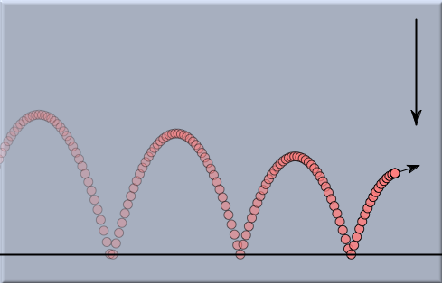
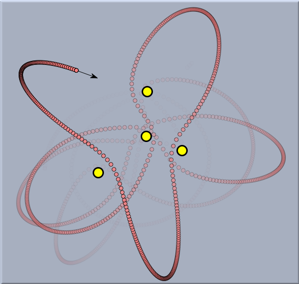

Simulating Masses and Forces
Elementary Mechanics
|
acceleration equals force divided by mass
|
This simple law is the key to understanding the movement of mass particles under the influence of forces. Mass particles may be almost anything: electrons, balls, or even planets. Forces may be present for various reasons. They may come from electrostatic attraction, from stretched rubber bands, or from interplanetary gravitation. Independent of the type of mass or type of force, the above law describes how the velocity of a particle will change.
Acceleration is the change of velocity per unit time. Thus we observe a simple but important consequence of the above law:
If no forces are present, then a particle will maintain its velocity and travel forever with the same speed in the same direction. As soon as forces are present, particles may travel on curved trajectories and they may speed up and slow down. They appear to be attracted to or repelled from the source of the force.
 |
| A ball under the attraction of gravitation |
In principle, if the initial positions and velocities are known as well as all forces that are acting, one can exactly reconstruct the motion of a system of particles. If we apply the correct mathematical formalism, such systems usually lead to differential equations. These differential equations are in a sense the mathematical essence that describes the movement of the system. Unfortunately, even rather small physical systems lead to differential equations that are not solvable explicitly. They may even exhibit chaotic behavior, as shown in the following system (a freely movable planet under the influence of four fixed stars).
 |
| The chaotic movement of a planet with many suns |
Nevertheless, one can attack such differential equations by numerical methods. These numerical methods model a continuous system by discrete methods. That is, they sample the positions, velocities, and forces at discrete points in time. From the situation at one moment in time (time stamp) (say
t) such numerical methods try to estimate what the positions and velocities will be after some time interval
delta has passed. At time stamp
t + delta the numerical method proceeds with the estimated data to calculate a new estimate for the next time stamp. By this method, a discrete sequence of positions and velocities is generated. Obviously, such a sequence does not match the physical reality precisely. However, if the numerical estimation is good and if the time intervals
delta are not too big, one can get very reasonable approximations of the physical truth. Furthermore, good numerical solvers have the property that (at least for most cases) the calculated motion becomes a better and better approximation of the physical reality as the time intervals are allowed to tend to zero.
Continue -->
Cinderella and Physics